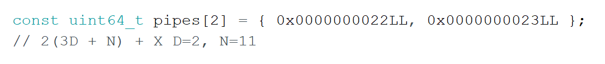
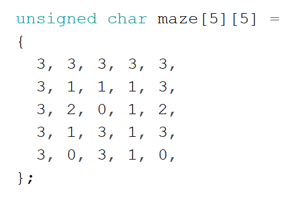
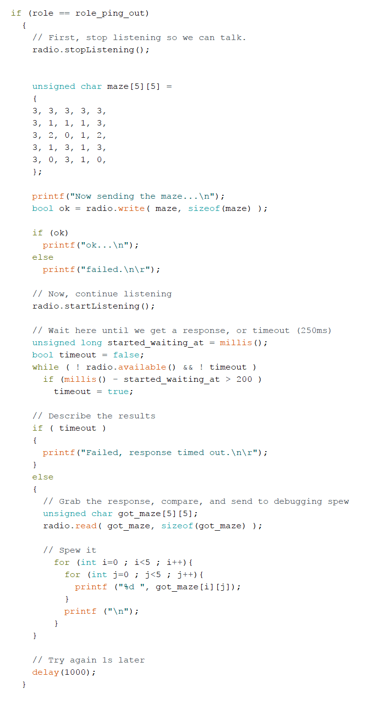
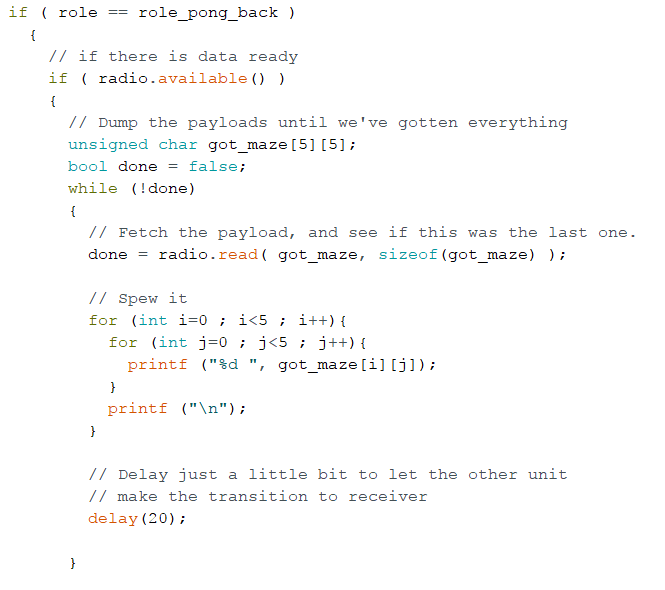
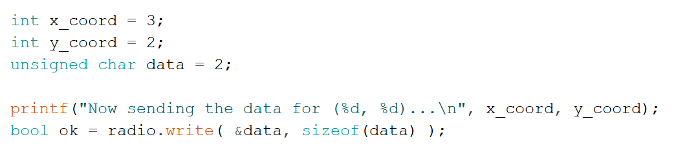
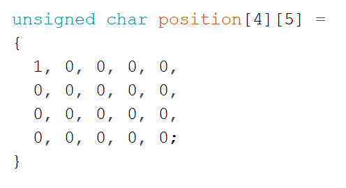
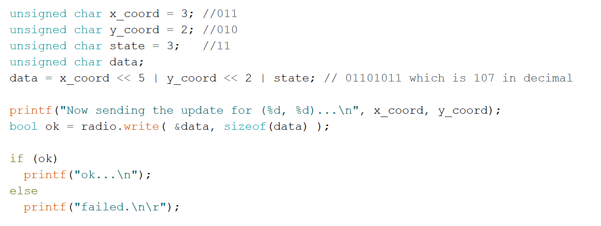
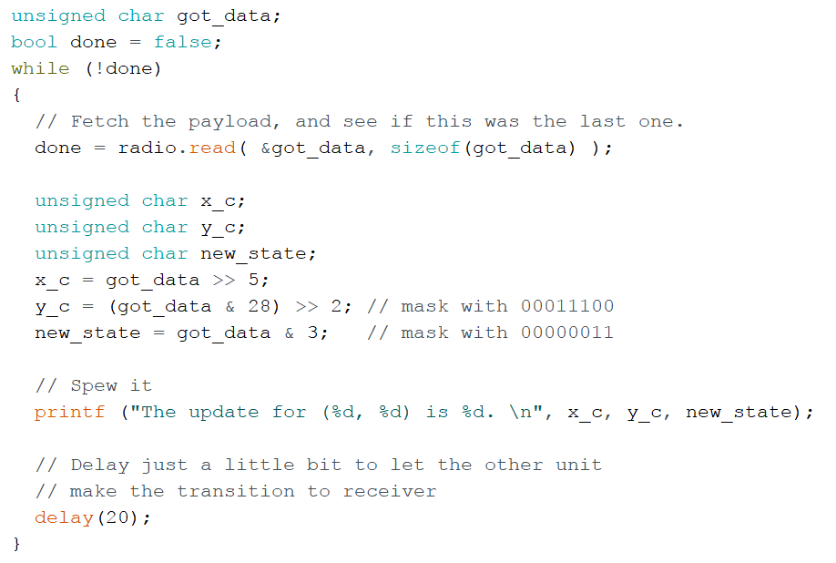
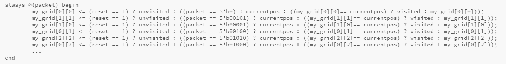

LAB04: RADIO COMMUNICATION AND
MAP DRAWING
Radio Team
Prelab
We began by checking out the reference page of the RF24 Arduino library.
Our job is to send a packet of information that contains the information necessary to update the state. This includes information like walls and treasure locations. The two main ways to transmit this information is through a parallel interface or serial interface. Because for this lab, we only have to display the current position and track previously visited positions, we decided to keep our parallel interface implementation from lab 3. This is because it is easier to implement on an FPGA. Also the information that we are sending from the Arduino to the FPGA does not need that many bits at the moment. We will continue to monitor the interface that we use and may switch to SPI if we feel the need.
Equipment
- * 2 Nordic nRF24L01+ transceivers
- * 2 Arduino Unos (one must be shared with the other sub-team)
- * 2 USB A/B cables
- * 2 radio breakout boards with headers
Hardware
We assembled each of the Arduinos with an RF module, adapter board, and a wire for power to the 3.3V output as shown below:

Initial Testing
We first changed the channel numbers:
RF24 sketch was uploaded to both of the Arduinos. One serves as a sender and the other serves as a receiver.
The results for the sender is:

The results for the receiver is:

The power level is set to be at minimun which is -18dBm, we lost several packages at around 30 feet and the connection is completely lost at around 40 feet. The serial monitor looks like:

Sending the Maze
Initially, we are going to send the entire maze every time some part of it is modified. The maze is stored as a two dimensional, 5 x 5 array of chars.
Here is how it is defined:
We then created the following sketch to send the array.
The code below is for the receiver:
The Auto-ACK feature is automatically turned on so we don’t need to bother enabling it.
The result for the sender can be seen below:

The result for the receiver can be seen below:

Only Sending New Info
Next we modified our sketch to only send the data for parts of the maze that have changed from their last value. For each packet sent, we include a data character and an x and y index of its position in the maze matrix.
Part of the code for the sender is:

Part of the code for the receiver is:
The result for the sender can be seen below:

The result for the receiver can be seen below:

Sending Shrimpbot's Position
In order to have the robot’s position updated in real time on the display, we will relay its coordinates over radio to the second Arduino, which ports that information over to the FPGA to be displayed.
We designed for a 4 x 5 two dimensional matrix defined as below:
The data is sent as a package containing x-coordinate, y-coordinate, and state. Since the maze is 4 * 5, we need 3 bits both for x- and y-coordinate and 2 bits for the state. We first pack the x-coordinate, y-coordinate, and state to data character in the sender side and unpack in the receiver side. In the sender side, we left shift x-coordinate 5 bits and y-coordinate 2 bits. In the receiver side, we right shift x-coordinate 5 bits. For y-coordinate, we first mask off bits with 00011100 which is 28 in decimal and then right shift 2 bits. For state, we only need to mask off bits with 00000011 which is 3 in decimal. Taking (3, 2) as an example, the code for the sender is:
The code for the receiver is:
The result for the sender can be seen below:

The result for the receiver can be seen below:

FPGA Team
Prelab
First we decided our data transmission scheme for this lab and beyond. We wanted to design a system that can transmit large packets with ease, as this will be necesary for the final competition.
We decided to use this method to send packets…
Equipment
- * 1 FPGA Dev Board
- * 1 VGA screen
- * 1 VGA cable
- * 1 VGA connector
- * 1 VGA switch
- * Various resistors
Increasing grid size
We had already implemented the 4 by 5 grid in the previous lab, so there was no work to be done this week.
Receiving packets from the Arduino
We used a parallel method to read data, where we read data from 5 GPIO pins at once. While this was good for this lab since we did not need many bits, we might choose to use SPI in the future if we need to send more bits. Using the previously agreed upon packet format, we wrote a module to read data sent from the arduino. The packet was 5 bits and contained the grid block that was the current position.
Displaying shrimpbot’s position
Using the data from the previous section, we parse the inputted position and display it on a 4 x 5 grid. We defined a parameter and we updated the appropriate register based on the packet we received.
Marking our path
Next we added functionality to display the previously explored locations in the maze as well as the current position. To do this, we updated the register with value current position to have the value visited.
The following code shows how we updated the grid registers based on the packet that we received and the current value of the register.
This video demonstrates how the FPGA is able to change the current position (marked by the green square) based on the parsing of a packet. The blue squares are the visited ones, while the black is unvisited, and the red represents treasure.